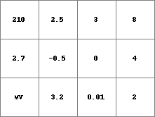
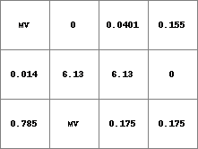

asc2map¶
asc2map
Converts from ascii file format to PCRaster map format
asc2map [options] asciifile PCRresult
- asciifile
- asciifile
- PCRresult
- spatial specified by data type option; if data type option is not set: data type of PCRclone
Options¶
Options can be given related to the layout of asciifile and the way asciifile must be read. These options are described in the operation section. Other options are:
--clonePCRclone
PCRclone is taken as clonemap. If you have set a global clonemap as global option, you don’t need to set clone in the command line: the clonemap you have set as global option is taken as clonemap. If you have not set a global clonemap or if you want to use a different clonemap than the global clonemap, you must specify the clonemap in the command line with the clone option.
-B, -N, -O, -S, -D and -L
This data type option specifies the data type which is assigned to PCRresult (respectively boolean, nominal, ordinal, scalar, directional, ldd). If the option is not set, PCRresult is assigned the data type of PCRclone or the global clone. The data in asciifile must be in the domain of the data type which is assigned to PCRresult. For description of these domains see the description of the different data types.
–small or –large
In most case, the default cell representation will be sufficient. If you want, you can specify the cell representations:
Nominal and ordinal data types
- --small
- cell values are represented by small integer cell representation (default)
- --large
- cell values are represented by large integer cell representation
if option -D is set; –degrees of –radians
- --degrees
- values on asciifile are interpreted as degrees (default)
- --radians
- values on asciifile are interpreted as radians
-m nodatavalue
nodatavalue is the value in columnfile which is converted to a missing value on PCRresult. It can be one ascii character (letters, figures, symbols) or a string of ascii charaters. For instance: -m -99 -98. or -m j83s0w. Default, if this option is not set, 1e31 is recognized as a missing value.
-s separator
By default, whitespace (one or more tabs, spaces) is recognized as separator between the values of a row in the asciifile. If the values are separated by a different separator, you can specify it with the option. The separator can be one of the ascii characters (always one). In that case, asc2map recognizes the specified separator with or without whitespace as separator. For instance, if the values in asciifile are separated by a ; character followed by 5 spaces, specify -s ; in the command line (you do not need to specify the whitespace characters).
Operation¶
The asciifile is converted to PCRresult, which is an expression in PCRaster map format. PCRresult is assigned the location attributes of PCRclone (number of rows and columns, cell size, x and y coordinates), or if the option --clone is not set in the command line the location attributes of the global clone. The asciifile must contain data values separated by one or more spaces or tabs. Values may contain the characters: -eE.0123456789. Valid values are for instance:
-3324.4E-12 for -3324.4 x 10-12 .22 for 0.22
simple conversion¶
The most simple conversion is a conversion ignoring the layout of your data on the asciifile (ordering of data by rows, row definitions or headers for instance). This simple conversion is performed default. All the characters on your asciifile will be interpreted as data. The operator scans the asciifile starting at the top line from left to right, than the second line from left to right etc. Each time a value is scanned it is assigned to a cell on PCRresult until PCRresult is totally filled with cell values. If the asciifile contains a larger number of values than the number of cells on PCRresult, the remaining values are simply ignored. The values are assigned to PCRresult starting with the top row on the map and ending with the bottom row. The first value which is filled in is the first value in the asciifile, the second value is the second value in the asciifile etc.. This conversion imposes almost no restriction on the layout of the asciifile: if your data are ordered in a number of rows and columns which corresponds with the number of rows and columns on PCRresult it will result in a correct conversion, but if they are not ordered this way (for instance they are on one line in the asciifile) a conversion is also possible.
conversion from ARC/INFO ascii files¶
In ARC/INFO, grid maps can be converted to an formatted ascii file using the ARC/INFO gridascii command. These output files from ARC/INFO are converted to the PCRaster map format with asc2map using the option -a without setting the options -s, -m, -h and -r. These latter options will be totally ignored if you set them in combination with -a. The output asciifile from ARC/INFO will contain a header. The number of rows and columns of the original ARC/INFO map given in the header must correspond with the number of rows and columns of PCRclone. The remaining location attributes in the header are ignored during conversion since they are taken from PCRclone (cell size and x,y coordinates). If the header contains a no_data_value, each value in the asciifile which corresponds with the no_data_value is assigned a missing value on PCRresult. If the header does not contain a no_data_value the value -9999 is recognized as a missing value.
conversion from Genamap ascii files¶
In Genamap, grid maps can be converted to an formatted asciifile using the Genamap audit command. These output files from Genamap are converted to the PCRaster map format with asc2map using the option -g. The number of rows and columns of the original Genamap map, given in the header of the output file from Genamap must correspond with the number of rows and columns of PCRclone. Assignment of missing values can be specified by the option -m. Do not use the options -s, -h and -r in addition to -g. If you do set them, they will be totally ignored.
conversion from asciifiles with an exotic format¶
Two options can be used to impose the command to take into account the layout of your asciifile. They can not be used in combination with the options -a and -g.
-h asciilinesheader
This is used if the asciifile contains a header with information which must be ignored during scanning. The option -h must be followed by linesheader which must be whole number larger than 0. This is the number of lines which will be skipped at the top of the asciifile. The asciifile is scanned starting at line linesheader.
-r asciilinesbeforemaprow
The option -r results in skipping of data in asciifile each time before asc2map starts with filling a new row on PCRresult. Rows on PCRresult are filled in as follows: First a number of lines on asciifile is skipped. The number of lines which is skipped is given by asciilinesbeforemaprow, it must be a whole value equal to or larger than 0. Then, the asciifile is scanned until the first row on PCRresult is filled with data. At that point, the remaining data on the line in asciifile are skipped plus data on the next asciilinesbeforemaprow number of lines. Then, the next row on PCRresult is filled with the data read from the row on asciifile after the skipped rows.
Notes¶
Using asc2map for generating a PCRresult of data type ldd is quite risky: probably it will result in a ldd which is unsound. If you do want to create a PCRresult of data type ldd use the operator lddrepair afterwards. This operator will modify the ldd in such a way that it will be sound.
Group¶
This operation belongs to the group of Creation of PCRaster maps
Examples¶
asc2map --clone mapclone.map -S -m mv -v 4 AscFile1.txt Result1.map
Result1.map AscFile1.txt mapclone.map  210 2.5 3 8 2.7 -0.5 0 4 MV 3.2 0.01 2

asc2map --clone mapclone.map -D -a AscFile2.txt Result2.map
Result2.map AscFile2.txt mapclone.map  NCOLS 4 NROWS 3 XLLCENTER 120 YLLCENTER 120 CELLSIZE 15 NODATA_VALUE -9999 -9999 0 2.3 8.9 0.8 351 -9 360 45 -9999 370 10